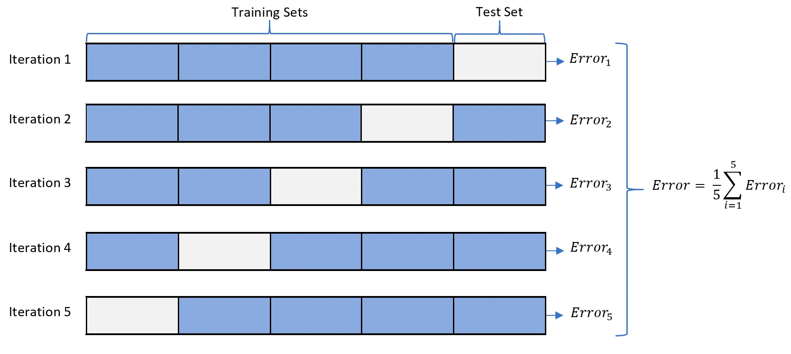

Model evaluation
Splitting our data for training, testing, and validation

Info
Train-test-validation is a common approach used in machine learning to evaluate the performance of a model. The approach involves dividing a dataset into three parts: a training set, a validation set, and a test set.
The training set
It is the portion of the dataset used to train the model. The model learns from the patterns and relationships present in the training data and uses this knowledge to make predictions on new, unseen data.
The validation set
It is used to evaluate the performance of the model during training. As the model learns from the training data, its performance is evaluated on the validation set to assess whether it is overfitting (i.e., memorizing the training data and performing poorly on new data) or underfitting (i.e., not capturing the patterns and relationships present in the training data).
The test set
Tips
You can think about the test set as unseen data
It is used to evaluate the performance of the model after it has been trained and tuned on the training and validation sets. The test set provides an unbiased estimate of the model's performance on new, unseen data.
The train-test-validation approach is important because it enables us to assess the quality of the model's predictions and make informed decisions about how to improve the model. By dividing the dataset into separate training, validation, and test sets, we can ensure that the model is not overfitting or underfitting and that it can generalize well to new, unseen data.
Cross-validation
What is cross validation ?
Cross-validation is a technique used to evaluate the performance of a machine learning model on a limited dataset by splitting the data into multiple subsets, training the model on some subsets, and evaluating its performance on the remaining subsets.
The basic idea behind cross-validation is to ensure that the model is not overfitting the data and can generalize well to new data. It does this by simulating the process of testing the model on new data that it has not seen before.
The most common form of cross-validation is k-fold cross-validation, where the data is divided into k equal-sized subsets, or folds. The algorithm is then trained on k-1 folds and tested on the remaining fold. This process is repeated k times, with each fold used exactly once as the testing data. The results from each fold are then averaged to obtain an estimate of the model's performance.
For example, in 5-fold cross-validation, the dataset would be split into five equal parts, with four parts used for training and one part used for testing. This process is repeated five times, with each of the five parts used as the testing data once. The average of the results from the five rounds is then used as an estimate of the model's performance.

One of the advantages of cross-validation is that it can provide a more accurate estimate of a model's performance than a single train-test split. This is because the results are averaged over multiple rounds, reducing the variability of the estimate. It can also help to detect overfitting, as a model that overfits the training data will perform poorly on the testing data.
Warning
Cross-validation can also be computationally expensive, as it requires training and evaluating the model multiple times. It may also be less appropriate for some datasets, such as those with highly imbalanced classes or temporal dependencies.
Overall, cross-validation is a powerful tool for evaluating the performance of a machine learning model and can help to improve the accuracy and generalization of the model.
Classification
Tips
In general we use a confusion matrix to visualize the error made by an algorithm in a classification problem it's not limited to binary classification.
| Actual Positive | Actual Negative | |
|---|---|---|
| Predicted Positive | TP | FP |
| Predicted Negative | FN | TN |
| Evaluation Metric | Formula | When to Use |
|---|---|---|
| Accuracy | (TP + TN) / (TP + TN + FP + FN) | Balanced |
| Precision | TP / (TP + FP) | Imbalanced |
| Recall | TP / (TP + FN) | Imbalanced |
| F1 Score | 2 * (Precision * Recall) / (Precision + Recall) | Imbalanced |
Regression
| Evaluation Metric | Formula | When to Use |
|---|---|---|
| Mean Squared Error (MSE) | 1/n * ∑(y_true - y_pred)^2 | General |
| Root Mean Squared Error (RMSE) | √(1/n * ∑(y_true - y_pred)^2) | General |
| R-squared (R2) | 1 - ∑(y_true - y_pred)^2 / ∑(y_true - y_true_mean)^2 | General |
| MAE (Mean Absolute Error) | 1/n * ∑ ( y_true - y_pred ) | General |
| MAPE (Mean Absolute Percentage Error) | 100% * 1/n * ∑( y_true - y_pred) / y_true | Specific |